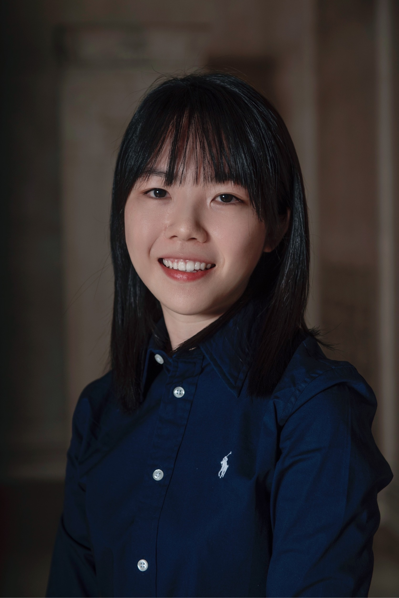

Hi, this is I-Shu Wang
A motivated graduate student major in Quantitative Biology and Bioinformatics at Carnegie Mellon University, with an expected graduation in Dec 2023.
Complemented by a Master's degree in Biochemical Science and Technology from National Taiwan University.
Offering a strong academic background and hands-on experience in genomic research, data analysis, and bioinformatics.
Proficient in utilizing various computational tools and programming languages, including shell script, Python, Go, R, to derive meaningful insights from biological data.
Seeking a full-time position to apply my skills and contribute to cutting-edge research in the field of bioinformatics.
Education
Carnegie Mellon University
Pittsburgh, PA
Master of Science in Quantitative Biology And Bioinformatics
- Current GPA: 4.01/4.33
- Relative Courses: (* Fall Semester)
- Programming for Scientists
- Data Analysis for Biological Sciences
- Machine Learning
- Algorithms & Advanced Data Structures
- *Introduction to Deep Learning
National Taiwan University
Taipei, Taiwan
Master of Science in Biochemical Science & Technology
- Member of Food Chemistry Lab, supervised by Prof. Nan-Wei Su
- Thesis: The effect of qdoI on the flavon-3-ol phosphorylation by Bacillus subtilis BCRC80517
National Chung Cheng University
Chiayi, Taiwan
Bachelor of Science in Biomedical Science
- Certificate in Functional Genomics Program
- Relative Courses:
- Introduction to Biostatistics
- Molecular Biology
- Biochemistry
- Introduction to Bioinformatics
- Virology
- Genetics
- Cell Biology
- Immunology
- Microbiology
- Introduction to Systems Biology